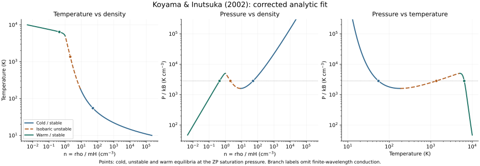
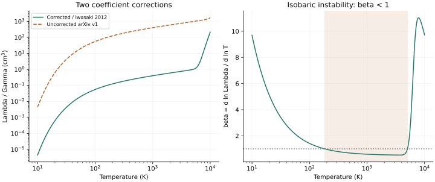

Cold endpoint
T = 54.980188 K
n = 51.343664 cm⁻³
Isobarically stable
Koyama & Inutsuka 2002 / Corrected analytic fit / Equilibrium benchmark
Balance heating and cooling, follow the stable and unstable branches, and locate the pressure that supports a static planar conductive front.
A new diagnostic of the corrected model, with numerical validation. This does not reproduce the original two-dimensional simulation or claim to digitize an equilibrium figure from the 2002 paper. The same cooling law underlies our Iwasaki & Inutsuka (2012) front prototype.

With net volumetric cooling Q = n²Λ − nΓ, thermal equilibrium gives n = Γ/Λ(T) and P/kB = TΓ/Λ(T). Here Γ = 2 × 10⁻²⁶ erg per H atom per second; Λ is in erg cm³ s⁻¹. Let β = d ln Λ / d ln T. At equilibrium, (∂Q/∂T)P = nΓ(β − 1)/T. The local isobaric thermal mode is stable for β > 1 and unstable for β < 1.
These branch labels omit the wavelength dependence of conduction, which stabilizes sufficiently small scales. The isochoric derivative is positive throughout the displayed interval. The plotted 10–10,000 K range is a diagnostic choice, not a claim that a temperature-only fit describes all chemistry or ionization there.
The turning pressures are Pmin/kB = 1597.453 and Pmax/kB = 5007.000 K cm⁻³. Two stable equilibria share a pressure between these limits; a static conductive front imposes an additional condition.
Psat/kB = 2822.884297 K cm⁻³. For a planar, static front with zero conductive flux at each end, integrate d(κ dT/dx)/dx = Q to obtain ∫TcTw κ(T) Q(T,P) dT = 0. We use κ = 2500√T erg cm⁻¹ K⁻¹ s⁻¹. An unweighted equal-area construction on the pressure–density plot would give a different condition.
T = 54.980188 K
n = 51.343664 cm⁻³
Isobarically stable
T = 1364.881273 K
n = 2.068227 cm⁻³
Isobarically unstable
T = 6417.132178 K
n = 0.439898 cm⁻³
Isobarically stable
The intermediate point is the third intersection of the common-pressure line with the equilibrium curve. It is not a third asymptotic endpoint of this cold-to-warm static front. Uniform equilibria have no temperature gradient; conduction selects the connecting front without moving the equilibrium curve.
Iwasaki & Inutsuka (2012), equations (4)–(7), use the same pure-H pressure convention, corrected rates and conductivity. Our two implementations agree on Psat to better than 10⁻¹⁰ relative precision. The paper prints Psat/kB = 2823, Pmax/kB = 5012, and Pmin/kB = 1596 in the text or 1598 in Figure 1. We retain these small numerical differences instead of fitting coefficients to the labels. A nonzero mass flux changes the front problem; uniform thermal equilibrium alone does not determine the pressure–mass-flux classification.
For the FGH/GHF prototype, the bounded saturation search is recorded separately. Its density includes H and He nuclei plus electrons in the pressure. Its unresolved historical coefficients prevent assigning a historical FGH saturation value.
Historical aside: van der Waals, Maxwell’s equal-area rule, and why ZP saturation uses a different integral. Primary publications traced to 1873–1875.
Λ(T) / Γ = 10⁷ exp[−118400 / (T + 1000)]
+ 0.014 √T exp[−92 / T] cm³
Γ = 2 × 10⁻²⁶ erg s⁻¹ per H atom
Vázquez-Semadeni et al. (2007), p. 873, equation (4) and footnote 5, identify two typographical errors and attribute the corrected form to H. Koyama. This citation records the correction provenance; that simulation has not been added to the atlas. Iwasaki & Inutsuka (2012), equation (7), independently print the adopted form.
No separate journal erratum was located in the arXiv record and targeted searches on 3 November 2026. This does not prove its absence. The publisher PDF was inaccessible; its typesetting has not been independently inspected. The version inspected here is explicitly recorded in the source audit.
python -m pip install -r requirements.txt python reproduce.py --output output
Place the downloadable files together in one directory. The standalone run checks frozen Iwasaki reference values; the repository publication also compares the live front implementation over the full temperature grid. Validation covers equilibrium closure, independent derivative and root calculations, time-dependent isobaric parcel responses, and an independent quadrature of the static-front integral.